01 — Pause → Play
Timer / resume control. Clear, but no “self” yet.
Shortlist kept #1 and #5. New round folds in self / habit / waking up
again while keeping pause → continue. Dev server:
http://127.0.0.1:5174/logo-candidates/preview.html
(Resuming uses port 5174 so it doesn’t collide with other apps on 5173).
Timer / resume control. Clear, but no “self” yet.
Same idea as #1, but play is the hero: larger coral triangle, quiet muted pause bars on the left.
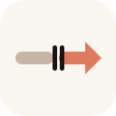
Postponed, paused, resumed. Strong story; still abstract.
Head + body as pause bars, play emerging. #1 with a person — “I’m picking myself back up.”
You stand in the pause between muted and coral. #5 with a figure — postponement is personal, not abstract.
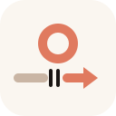
Sunrise over a gap → continue horizon. “Waking up again” without a full person silhouette.
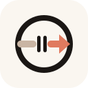
#5’s pulse inside a self ring. Habit as something that lives in you — paused, then resumed.
Full figure with pause → play in the chest. Most literal “self waking”; busiest at favicon size.
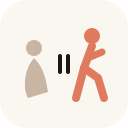
Muted slumped figure, pause marks, then coral walker. Before / after in one mark — “picking myself back up.”
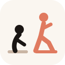
Same story as a scene: ink figure bent over the muted ground, coral figure already in stride on the resumed path.
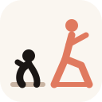
Deeper crouch on the left, bigger forward lean on the right. Same #12 scene, more motion contrast.
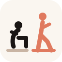
Seated slumped figure getting up into a walk. Reads as “I was stuck, now I’m moving.”
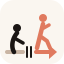
#12 figures on #5’s path: muted stretch, pause marks, coral resume + tip. Product mechanic + self story together.
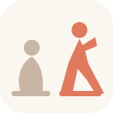
Filled shapes instead of stick limbs. Softer at a glance; still slumped (muted) → walking (coral).
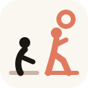
#12 scene with a soft sunrise ahead of the walker — waking up again and moving.
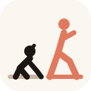
#12 layout, left figure low and crawling with head lifting — trying to wake up — then coral walker.
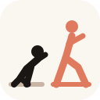
Same idea mid-effort: on all fours, body angled up, arm reaching — the moment of getting yourself going.